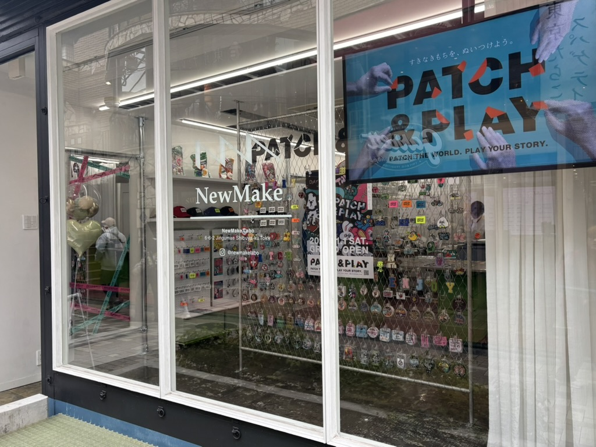

2025.10.30  New make labo 体験記 本日はNew make laboに伺い、実際のリメイク制作現場を見学しました。職人の方々の丁寧な手仕事や、素材へのこだわりを間近で体感。 自分の作りたいブランドの方向性にもつながる学びがありました。 続きを読む →
2025.1.20 学内ビジネスコンテスト 2年次の最終課題にてXBP内でビジネスコンテストが開催され、私たちのグループでは和柄をコンセプトとした「リメイクブランドの立ち上げ」をテーマに提案しました。 続きを読む →